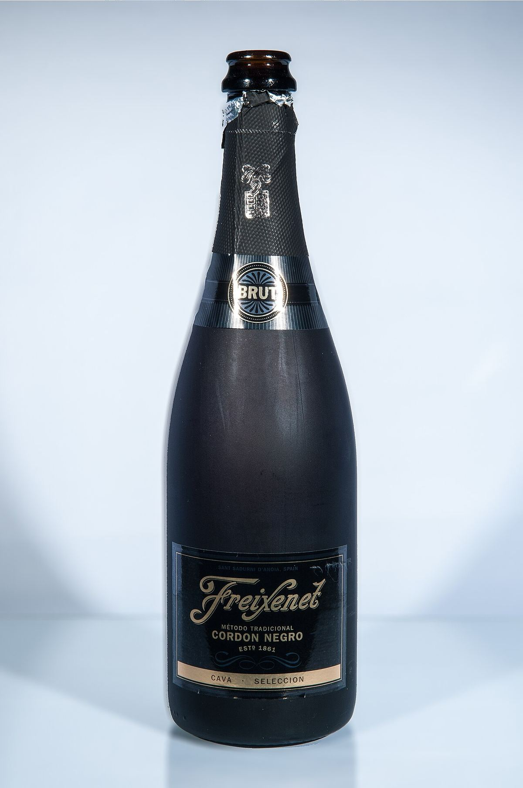

ESPUMOSO
Blanca catalana del Penedès, la de más estructura de las tres variedades tradicionales del cava; da también blancos tranquilos de buena guarda.

El Xarel·lo es una variedad autóctona de Cataluña, ligada históricamente al Penedès. Se conoce como Pansa Blanca en Alella, al norte de Barcelona, y como Cartoixà en algunas zonas de Tarragona. Existe también una mutación de piel rosada, el Xarel·lo Vermell, que se cultiva en pequeñas cantidades.
Es una cepa vigorosa, de brotación y maduración de media estación a tardía, con racimos grandes y bayas de piel gruesa. Se adapta bien al clima mediterráneo del Penedès y a sus suelos calcáreos y arcillosos. Es sensible al oídio. Su piel gruesa le da cierta resistencia y contribuye a la estructura de sus vinos.
Da vinos de color amarillo pajizo, con cuerpo, buena acidez y graduación media. Los aromas recuerdan a fruta blanca (manzana, pera), cítricos, hinojo y hierbas mediterráneas, con un carácter terroso o mineral. En el cava es la variedad que aporta cuerpo, estructura y aptitud para crianzas largas, frente a la frescura del Macabeo y la delicadeza de la Parellada. En las últimas décadas se han multiplicado los blancos tranquilos de Xarel·lo, a menudo de viñas viejas, con crianza sobre lías, en barrica o en ánforas, que evolucionan bien durante años.
Se cultiva casi exclusivamente en Cataluña. Su principal zona es el Penedès, donde es una de las variedades más plantadas, y la D.O. Cava, así como los espumosos de Corpinnat y Clàssic Penedès. También está presente en Alella, como Pansa Blanca, en Tarragona y en la Conca de Barberà. Fuera de Cataluña su presencia es muy escasa.
Tanto la marca colectiva Corpinnat como la categoría Clàssic Penedès de la D.O. Penedès, dedicadas a espumosos de larga crianza, exigen uva de cultivo ecológico, y en ellas el Xarel·lo suele ser la variedad predominante. Su capacidad de envejecimiento la ha convertido en protagonista de muchos de los espumosos catalanes de mayor crianza.
Los blancos de Xarel·lo, con cuerpo y frescura, acompañan pescados, arroces, verduras a la brasa como los calçots, aves y quesos semicurados. Los espumosos de larga crianza, donde suele predominar, combinan bien con mariscos y platos de cierta intensidad.
